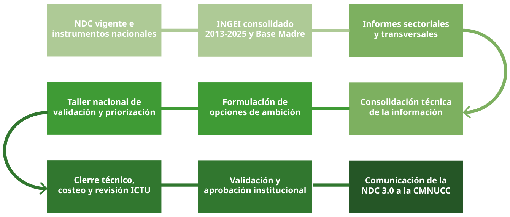
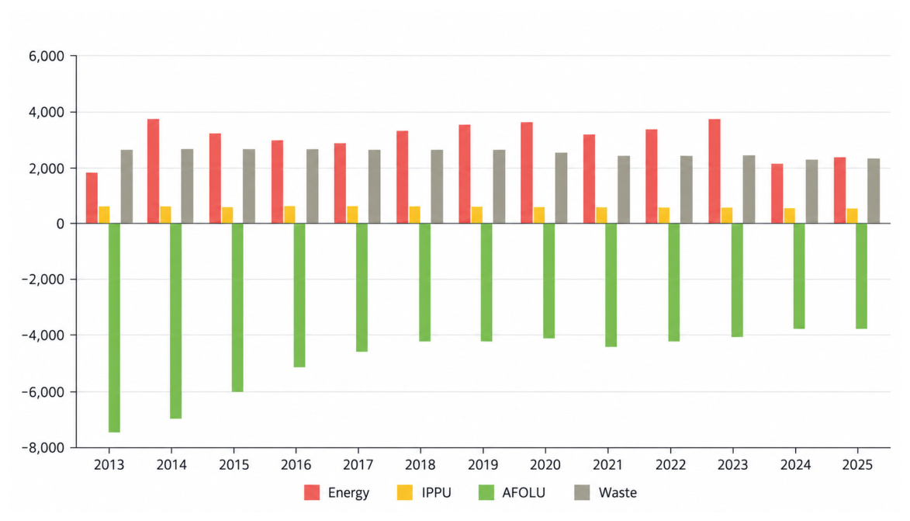
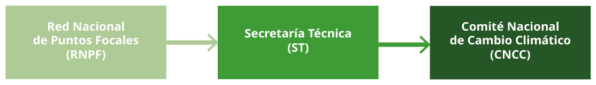

NDC 3.0
Horizon 2035
Government of the Republic of Equatorial Guinea
Ministry of Environment and Blue Economy
Malabo, Equatorial Guinea
September 2026
Malabo, September 2026
Nationally Determined Contribution of the Republic of Equatorial Guinea NDC 3.0 · Horizon 2035
María Tomé Nuez: consolidation of sectoral reports, formulation and validation of ambition, and preparation and drafting of the NDC 3.0 document.
Mr. Fidel Esono Mba: Minister of Environment and Blue Economy.
Mr. Juan Nko Mbula: Vice-Minister of Environment, Blue Economy and Water Resources.
Mr. Jose Nsue Ndong Nsang: Secretary of State of the Ministry of Environment and Blue Economy, in charge of Climate Change and Biodiversity Conservation/Deputy Focal Point of the CMNUCC.
Mr. Pedro Malavo Nsene: Director General of Climate Change and International Conventions/Focal Point of the CMNCC.
Government of the Republic of Equatorial Guinea
Ministry of Environment and Blue Economy
Nationally Determined Contribution of Equatorial Guinea
NDC 3.0 — Horizon 2035
How to cite
Ministry of Environment and Blue Economy (MMAEA). (2026). Nationally Determined Contribution (NDC 3.0). Horizon 2035. Government of the Republic of Equatorial Guinea. Malabo, Equatorial Guinea.
Demetrio Bocuma Meñe— project coordination / Programme Analyst. Betty Pamela Wabunoha — PNUD Resident Representative. José Herman Wabo — PNUD Deputy Representative. José Marcos Nsue Obama — PNUD, financial support.
María Tomé Nuez: consolidation of sectoral reports, formulation and validation of ambition, and preparation and drafting of the NDC 3.0 document.
Fabiana Issler and Janet Rojas Martínez: updating and consolidation of the National Greenhouse Gas Inventory (INGEI) and technical coordination of the MADRE Database.
Rosa Yemi Hinestrosa Gómez: national communication and awareness-raising strategy and support for the review and validation of the NDC 3.0.
María Inés Monteiro Ribeiro: awareness-raising on climate change and GHG emission reductions.
Faustino Esono Anda: sectoral update of the INGEI for Energy and Waste and energy efficiency recommendations.
Pedro Ernesto Abeso Mangue: sectoral update of the INGEI for Agriculture, Forestry and Other Land Use (AFOLU).
Xabier Lecanda: legal and institutional framework for climate action.
Diana Angono Ona Nzang: inclusion, gender, youth, communities and just transition.
Leandro Carlos Fernández: consultancy on Strengthening Climate Action: National Protocols for Mitigation, Adaptation and Fund Mobilization, and their Multisectoral Presentation.
Pedro Ernesto Abeso Mangue: update of the INGEI in the AFOLU sectors as well as the Review and Update of the Institutional Arrangements.
The NDC 3.0 update process included the participation of representatives of public institutions, international organizations, local administrations, civil society and technical teams in the workshops and consultation and validation spaces held during the process. Participants included:
Juan Nko Mbula — Ministry of Environment and Blue Economy
Alfredo Owono Owono— Directorate General of Environment and Fight against Climate Change
José Herman Wabo — PNUD
Elias Ondo Nguema Maquina — Ministry of the Interior / Directorate General of Civil Society
Demetrio Bocuma Meñe — PNUD
Diego Bokara Bolobaha — INCOMA
Benjamin Eyene Salomon — Directorate General of Industry
Severino Mebulo Lobede — INPAGE
Pacomio Nkogo Nguema — Ministry of Foreign Affairs
Ruth Mbengono Abia — Ministry of Hydrocarbons, Mines and Electricity Mariluz Ikaka Luanga — Ministry of Gender Equality and Social Affairs
Hernani Coelho da Silva — FAO
Josefina Mbulito — FAO
Oscar Amancio Navas — FAO
José Marcos Nsue Obama — PNUD
Santiago Ntutumu — Ministry of Treasury/Finance
Teresa Meye Ndong — Ministry of Treasury/Finance
Inocencia Ucua Eteme Epitie — CNDES
Rosario Lopeló Compaña — Directorate General of Environment / Ramsar Focal Point
Susana Ayingono — CNDES
Buenaventura Nze Nze Balboa — NGO La Voz del Medio Ambiente G.E.
Demetrio Iviti Nsuga — Ministry of Environment and Blue Economy
Pelagia Bilogo Abaga — Malabo City Council
Magdalena Ayang Micha Eva — Malabo City Council
Federico Nkono — Ministry of Justice
Ana María Guémez — UNICEF, Deputy Representative.
Faustino Esono Anda — NDC 3.0 consultant
Janet Rojas Martínez — NDC 3.0 consultant
Fabiana Issler — NDC 3.0 consultant
Rosa Yemi Hinestrosa Gómez — NDC 3.0 consultant
Pedro Ernesto Abeso Mangue — NDC 3.0 consultant
María Tomé Nuez — NDC 3.0 consultant
Through this third Nationally Determined Contribution (NDC 3.0), the Republic of Equatorial Guinea reaffirms its firm commitment to global climate action and to the objectives of the Paris Agreement. As a Party to the United Nations Framework Convention on Climate Change, we recognize that climate change is one of the greatest challenges of our time and that responding to it requires coordinated, ambitious and sustained efforts by all countries.
This NDC represents a significant step in consolidating our vision of sustainable, resilient and inclusive development. The document reflects the national commitment to move towards an economy with low greenhouse gas emissions, while strengthening the adaptive capacity of our populations, ecosystems and productive sectors in the face of the growing impacts of climate change.
Its preparation was made possible by a broad participatory process led by the Government of Equatorial Guinea, with contributions from public institutions, private sector actors, civil society organizations, local communities, young people, women and development partners. This process has made it possible to identify national priorities that are realistic and aligned with our economic, social and environmental development objectives.
The NDC 3.0 incorporates strengthened mitigation and adaptation targets and measures for the period up to 2035, as well as actions aimed at strengthening the mechanisms for implementation, monitoring, transparency and resource mobilization. It also recognizes the importance of international cooperation and of access to finance, technology and capacity-building to achieve the necessary transformations.
As a country endowed with significant natural resources and rich biodiversity, we take on the responsibility of contributing to global efforts to address the climate crisis, while preserving our natural heritage for present and future generations. We are convinced that climate action also constitutes an opportunity to promote economic diversification, generate green employment and move towards a more sustainable and resilient development model.
We invite all our national and international partners to join us in implementing this roadmap and in building a more prosperous, secure and sustainable future for the Equatoguinean people.
His Excellency Mr. Fidel Esono Mba
Minister of Environment and Blue Economy
Republic of Equatorial Guinea
The preparation of the Nationally Determined Contribution of Equatorial Guinea (NDC 3.0) was made possible thanks to the collaboration of the public institutions, technical teams, sectoral entities and national actors that participated in the different stages of information generation, analysis, consultation, review and validation.
The Government of the Republic of Equatorial Guinea, through the Ministry of Environment and Blue Economy, especially thanks the ministerial departments, public bodies, technical and statistical institutions, territorial administrations, private sector, academia, civil society and other actors that contributed to the NDC update process for their participation.
Recognition is also given to the contribution of the persons and institutions that participated in the workshops, technical sessions, sectoral meetings and consultation spaces held during the NDC 3.0 preparation process, whose inputs contributed to the preparation and review of the various sectoral and cross-cutting reports, as well as to the identification, adjustment and prioritization of mitigation and adaptation measures. This process included the National Ambition Validation Workshop, held in Malabo on 25 August 2026.
Recognition is likewise given to the work of the technical teams and national and international consultants who participated in the preparation of the inventories, sectoral and cross-cutting reports, ambition analyses, implementation protocols and other technical products underpinning this contribution, as well as their support for the consolidation and review of the information.
The preparation of the NDC 3.0 was supported by the United Nations Development Programme (PNUD) in the development of the technical products and in facilitating the national update process.
The Government likewise thanks all institutions and persons who provided data, documents, sectoral knowledge and technical comments during the various stages of the process.
The Republic of Equatorial Guinea presents its Nationally Determined Contribution (NDC 3.0) with a 2035 horizon, updating its response to climate change on the basis of the consolidated 2013–2025 National Greenhouse Gas Inventory (INGEI) and its MADRE Database, the sectoral and cross-cutting analyses carried out during 2026, and the results of the national consultation, review and validation process.
On mitigation, the NDC 3.0 establishes a 37 % reduction in greenhouse gas emissions by 2035 relative to 2022, excluding LULUCF from the main quantitative indicator. The reference value amounts to approximately 6.272 Gg CO₂eq in 2022, which places the emissions level associated with the target at approximately 3.951 Gg CO₂eq in 2035. LULUCF emissions and removals are accounted for and reported separately, preserving transparency on the contribution of land uses and forest sinks to the national balance.
The mitigation contribution covers the Energy, IPPU, AFOLU and Waste sectors, with priorities relating, among others, to energy efficiency and sustainable mobility; the reduction of fugitive emissions and improved efficiency in oil and gas activities; the improvement of industrial processes and of IPPU information; the reduction of deforestation and forest degradation, sustainable forest management, forest restoration and monitoring; sustainable agricultural practices; and improved waste management, valorization and treatment.
On adaptation, the NDC sets priorities in climate information and early warning, water resources, agriculture and food security, coastal zones, fisheries and marine resources, forests and biodiversity, health, infrastructure and settlements, and adaptation planning. These priorities are set out in nine measures and are complemented by cross-cutting criteria on just transition, gender equality, youth, local communities and groups in vulnerable situations.
Implementation of the NDC 3.0 will require combining national capacities and resources with climate finance, technology development and transfer, and capacity-building. The contribution incorporates a portfolio of priority measures and mechanisms to progressively advance their development, costing, financing and implementation, without yet establishing a single aggregate figure for financial needs.
Finally, the NDC strengthens the national governance, monitoring and transparency mechanisms, promoting linkages between the NDC, the INGEI and the future Biennial Transparency Reports (BTR). The MADRE Database constitutes a central reference for the traceability and updating of national emissions and removals information, while the LT-LEDS 2050 remains a complementary long-term strategic reference.
|
Horizon |
2035 |
|
Mitigation target |
−37 % relative to 2022 |
|
Reference year |
2022 |
|
Target type |
Single-year target based on GHG emissions excluding LULUCF |
|
Reference value |
≈ 6.272 Gg CO₂eq |
|
Emissions level associated with the target in 2035 |
≈ 3.951 Gg CO₂eq |
|
Coverage of the quantitative indicator |
Energy · IPPU · Agriculture · Waste |
|
LULUCF |
Accounted for and reported separately |
|
NDC action sectors |
Energy · IPPU · AFOLU · Waste |
|
Adaptation |
Climate information and early warning · Water · Agriculture and food security · Coasts and fisheries · Forests and biodiversity · Health · Infrastructure and settlements · Adaptation planning |
|
Implementation |
2026–2035 · national resources + finance, technology and capacity-building |
|
Monitoring and transparency |
NDC · INGEI · BTR |
|
Long-term vision |
Alignment with the LT-LEDS 2050 |
|
Symbol |
Meaning |
|
ha |
Hectare |
|
°C |
Degree Celsius |
|
cm |
Centimetre |
|
CO₂ |
Carbon dioxide |
|
CO₂eq |
Carbon dioxide equivalent |
|
CH₄ |
Methane |
|
Gg |
Gigagram |
|
Gg CO₂eq |
Gigagrams of carbon dioxide equivalent |
|
GWh |
Gigawatt-hour |
|
km |
Kilometre |
|
km² |
Square kilometre |
|
MW |
Megawatt |
|
MWh |
Megawatt-hour |
|
N₂O |
Nitrous oxide |
|
SF₆ |
Sulphur hexafluoride |
|
t |
Tonne |
|
t/año |
Tonnes per year |
|
tCO₂eq |
Tonnes of carbon dioxide equivalent |
|
Acronym |
Meaning |
|
AFOLU |
Agriculture, Forestry and Other Land Use |
|
AR5 |
IPCC Fifth Assessment Report (Fifth Assessment Report) |
|
BTR |
Biennial Transparency Report (Biennial Transparency Report) |
|
CMA |
Conference of the Parties serving as the meeting of the Parties to the Paris Agreement |
|
CMNUCC |
United Nations Framework Convention on Climate Change |
|
CNCC |
National Climate Change Committee |
|
ETF |
Enhanced Transparency Framework (Enhanced Transparency Framework) |
|
GEI |
Greenhouse gases |
|
GWP100 |
100-year global warming potential |
|
HFC |
Hydrofluorocarbons |
|
ICTU |
Information to facilitate clarity, transparency and understanding |
|
INDEFOR-AP |
National Institute for Forest Development and Management of the Protected Areas System |
|
INEGE |
National Statistics Institute of Equatorial Guinea |
|
INGEI |
National Greenhouse Gas Inventory |
|
IPCC |
Intergovernmental Panel on Climate Change (Intergovernmental Panel on Climate Change) |
|
IPPU |
Industrial Processes and Product Use |
|
LT-LEDS |
Long-Term Low-Emission Development Strategy (Long-Term Low-Emission Development Strategy) |
|
M&E |
Monitoring and evaluation (Monitoring and Evaluation) |
|
MMAEA |
Ministry of Environment and Blue Economy |
|
MRV |
Measurement, reporting and verification |
|
NDC |
Nationally Determined Contribution (Nationally Determined Contribution) |
|
ONG |
Non-governmental organization |
|
PFC |
Perfluorocarbons |
|
PNA/NAP |
National Adaptation Plan (National Adaptation Plan) |
|
PNUD |
United Nations Development Programme |
|
QA/QC |
Quality assurance and quality control (Quality Assurance / Quality Control) |
|
REDD+ |
Reducing emissions from deforestation and forest degradation, conservation, sustainable management of forests and enhancement of forest carbon stocks |
|
RNPF |
National Network of Focal Points |
|
SEGESA |
Electricity Company of Equatorial Guinea |
|
SICGE |
Climate Information System of Equatorial Guinea |
|
SONAGAS |
National Gas Company of Equatorial Guinea |
The Republic of Equatorial Guinea presents its third Nationally Determined Contribution (NDC 3.0), with a 2035 horizon, within the framework of the Paris Agreement. The contribution updates national climate action based on the experience accumulated since the first NDC of 2015 and its first update, published in 2022, and incorporates the technical and sectoral information developed during the current update process.
The NDC 3.0 is based on the consolidated 2013–2025 National Greenhouse Gas Inventory (INGEI) and its MADRE Database, the sectoral and cross-cutting analyses carried out during 2026, and the results of the national consultation and validation process. On this basis, it establishes the national mitigation and adaptation priorities for 2035 and the main conditions for their implementation, monitoring and transparency.
Equatorial Guinea has been a Party to the United Nations Framework Convention on Climate Change (CMNUCC) since 2000 and ratified the Paris Agreement in 2018. Since then, the country has progressively developed its climate planning and response instruments, including its Nationally Determined Contributions and, more recently, its Long-Term Low-Emission Development Strategy (LT-LEDS).
The first NDC was submitted in 2015 and subsequently updated in 2021, with publication in 2022. The NDC 3.0 opens a new planning cycle with a 2035 horizon and draws on an updated information base, the sectoral analyses carried out during 2026 and the results of the national validation process. The quantitative evolution of the previous contributions and the progression of the new target are specifically developed in the chapters dedicated to mitigation and level of ambition.
The NDC 3.0 incorporates the information necessary to facilitate the clarity, transparency and understanding of the contribution, including the reference point, the implementation period, its scope and coverage, the main assumptions and methodological approaches, and the explanation of its progression and level of ambition.
The NDC 3.0 establishes 2035 as the new planning horizon for Equatorial Guinea's climate action. This horizon makes it possible to update the national contribution on the basis of more recent information and to guide mitigation, adaptation and implementation priorities for the next decade.
The NDC 3.0 is also aligned with national sustainable development priorities and, in particular, with the Equatorial Guinea 2035 Agenda – National Sustainable Development Strategy, aimed at improving well-being, social inclusion, economic transformation and diversification, environmental protection and balanced territorial development. The contribution seeks to progressively integrate climate action into these objectives and into the related sectoral policies and strategies.
The 2035 contribution is also formulated seeking to maintain consistency with the country's long-term climate vision. As a complementary strategic reference, the Long-Term Low-Emission Development Strategy (LT-LEDS), prepared in 2025, sets out transformation pathways to 2050 for the Energy, IPPU, AFOLU and Waste sectors, together with priorities for adaptation, governance and means of implementation.
Within this framework, the NDC 3.0 acts as an instrument for action to 2035, while the LT-LEDS provides a longer-term transformation perspective. The linkage between both instruments seeks to promote the consistency of short- and medium-term decisions with a progressive transition towards resilient, diversified and low-emission development, without automatically transferring the forward-looking scenarios or assumptions of the LT-LEDS to the NDC.
The territorial, economic, social and environmental circumstances of Equatorial Guinea shape both its emissions and removals profile and its vulnerability to climate change. Its continental, insular and coastal configuration, the importance of natural resources, the weight of hydrocarbons in the economy and the needs for diversification and development are central elements for understanding the mitigation and adaptation priorities established in this NDC.
Equatorial Guinea is located in the Gulf of Guinea and covers an area of approximately 28.051 km². Its territory comprises a continental region and a group of islands, notably Bioko, where the capital, Malabo, is located, and Annobón. This configuration creates differentiated conditions for climate planning, particularly in relation to forest and coastal ecosystems, water resources, infrastructure, connectivity and exposure to climate risks.
The coastal and maritime dimension is of particular relevance for adaptation. The country has approximately 644 km of coastline and an Exclusive Economic Zone of around 314.000 km². Erosion, flooding, changes in marine and coastal ecosystems and other extreme events therefore constitute significant risks for settlements, infrastructure, fisheries and the livelihoods of coastal communities.
The population is also markedly urban. The national data used in the preparation of this NDC put the population at approximately 1,506 million inhabitants in 2021, while in 2015 around 76,1 % lived in urban areas. These figures should be interpreted in light of their respective reference years and the limitations in updating the available demographic information.
The economic structure of Equatorial Guinea has been closely linked to the exploitation of oil and natural gas, while forest, agricultural and marine resources also form part of its productive base. The evolution of these sectors is relevant for climate action both because of their relationship with greenhouse gas emissions and removals and because of their exposure to the impacts of climate change.
Economic diversification is a priority of national planning. In this context, climate action offers opportunities for linkage with the development of renewable energy and energy efficiency, the modernisation of production processes, sustainable and resilient agriculture, and the responsible management of forests and other natural resources. The NDC 3.0 seeks to integrate these priorities within a development pathway that is progressively more resilient and diversified.
The energy system differs between the continental and insular regions and mainly combines hydroelectric generation and thermal generation based on gas and diesel. The continental region has historically had a greater presence of hydroelectric generation, while thermal generation has carried greater weight in the insular region.
The Energy sector is one of the main sources of national emissions excluding LULUCF. The consolidated INGEI identifies as its main components fuel combustion and fugitive emissions associated especially with oil and gas activities. In response, the NDC considers among its areas of action energy efficiency, the improvement of generation and grids, the incorporation of renewable energy, the reduction of losses and the reduction of fugitive emissions. The corresponding figures, measures and indicators are developed in chapter 4.
Climate action is developed in close relation to national priorities of well-being, social inclusion, employment, access to services, economic diversification and territorial development. The analyses carried out during the preparation of the NDC 3.0 also identify differences in access to training, employment and spaces for participation that may particularly affect women, young people, local communities and rural populations.
The NDC therefore incorporates criteria of equity, inclusion and participation in the design and implementation of climate action. Capacity building, technical training, access to the opportunities associated with the transition and consideration of territorial differences form part of the cross-cutting approaches developed later in this contribution.
The available national information identifies changes in the climatic conditions of Equatorial Guinea and a growing exposure to hazards related to rising temperatures, rainfall variability, droughts, heavy rainfall and flooding, and sea level rise. The available documentation also recognises limitations in the continuity of climate data and in the capacities to carry out systematic risk and vulnerability assessments.
The records compiled in national instruments show a trend of rising temperatures in both the continental and the insular region. Available projections estimate increases of approximately 0,9 °C to 2,5 °C by 2060, depending on the scenarios considered. These changes may increase pressures on health, water resources, agriculture, ecosystems and infrastructure.
Changes in precipitation patterns and risks associated with both dry periods and episodes of heavy rainfall and flooding are also identified. These hazards particularly affect water availability and quality, agriculture and food security, settlements, infrastructure and drainage systems.
The insular and coastal configuration also creates a specific exposure to sea level rise, erosion and coastal flooding. The available national analyses project a sea level rise of approximately 44 to 74 cm by 2100, with possible effects on the coastline, freshwater sources, coastal ecosystems, infrastructure and sea-related livelihoods.
The climate vulnerabilities of Equatorial Guinea are associated with its territorial, environmental, economic and social characteristics and with its dependence on climate-sensitive sectors. The available information makes it possible to identify priority areas of vulnerability, although the country does not yet have a quantitative national adaptation assessment equivalent to the INGEI used for mitigation. Therefore, vulnerability baselines, indicators and metrics will need to be progressively strengthened during the implementation of the NDC.
|
Area |
Main vulnerabilities and risks |
Response priorities |
|
Water resources |
Rainfall variability, dry periods, heavy rainfall and effects on water availability and quality. |
Integrated water management, protection of watersheds and sources, water supply and sanitation, storage and climate information. |
|
Agriculture and food security |
Rainfall variability, droughts, rising temperatures, soil degradation and other pressures that may affect productivity and rural livelihoods. |
Resilient agriculture, sustainable practices, soil conservation, productive diversification and agroclimatic information. |
|
Forests, biodiversity and ecosystems |
Ecosystem degradation, fires, alteration of ecosystem services and pressure on biodiversity. |
Conservation, restoration, sustainable management and nature-based solutions. |
|
Coastal zones, fisheries and marine resources |
Erosion, flooding, extreme events and alterations of marine and coastal ecosystems, with effects on infrastructure, fisheries and livelihoods. |
Coastal management, protection and restoration of habitats and strengthening the resilience of fisheries and coastal communities. |
|
Health |
Heat-related risks, climate-sensitive diseases and relationships between climate, water availability and sanitation. |
Surveillance, prevention, early warning and strengthening the resilience of health services. |
|
Infrastructure, cities and settlements |
Exposure to flooding, erosion, storms and other extreme events that may affect critical infrastructure and essential services. |
Integration of climate risk into planning and design, improvement of drainage and strengthening of resilient infrastructure and settlements. |
|
Social vulnerability and capacities |
Differentiated impacts on rural and coastal communities, women, young people and other groups in vulnerable situations, together with limitations in information, observation, early warning and institutional capacity. |
Participation and inclusion, institutional strengthening, generation of climate information, observation and early warning systems. |
The preparation of Equatorial Guinea's NDC 3.0 was carried out as a progressive process of updating technical information, sectoral consolidation, formulation of ambition options, consultation and validation with national stakeholders and prioritisation of measures. The process made it possible to distinguish between consolidated technical information, proposals, results of the participatory process and decisions subject to institutional formalisation.
The preparation of the contribution also took into account the applicable guidance of the Paris Agreement relating to the planning processes, institutional arrangements and participation used for the formulation of NDCs.
The process started from a review of the current NDC and the main national climate planning instruments. During 2026, the National Greenhouse Gas Inventory (INGEI) 2013–2025 was updated and consolidated, sectoral and cross-cutting analyses were developed, and this information was integrated to identify options for strengthening the national contribution.
On this basis, ambition options were prepared and tested during the National Ambition Validation Workshop, held in Malabo on 25 August 2026. The results of the workshop were subsequently used to adjust and prioritise the measures and to complete the technical finalisation of the contribution. Where there were differences between the previous technical proposals and the validation results, the latter constituted the reference for the final formulation of the NDC priorities.

The preparation of the NDC 3.0 was carried out under national institutional leadership, with technical support from the United Nations Development Programme (PNUD) and with the participation of the sectoral institutions responsible for providing and verifying information on Energy, IPPU, AFOLU, Waste, adaptation, planning, finance, statistical information and cross-cutting approaches.
The work carried out during the process also identified needs for strengthening institutional coordination and the permanent management of climate information. The proposals formulated include a National Network of Sectoral Focal Points, a Technical Secretariat, a National Climate Change Committee and a Climate Information System of Equatorial Guinea (SICGE), aimed at improving coordination, information exchange and the monitoring of the NDC, the INGEI and future Biennial Transparency Reports.
These structures are presented as institutional strengthening proposals and should not be interpreted as formally established mechanisms while their legal or administrative approval remains pending.
The NDC 3.0 integrates sources with differentiated functions. The consolidated INGEI 2013–2025 and its MADRE Database constitute the main quantitative reference for national emissions and removals. The sectoral reports complement this basis with methodological information, diagnoses, limitations and priorities; the previous NDCs serve as a reference for assessing progression; and the LT-LEDS 2025 is used as a forward-looking reference and for consistency with the long term, without automatically transferring its scenarios as commitments of the NDC 3.0.
The consolidation of the INGEI incorporated review, harmonisation, traceability and quality control procedures. Nevertheless, differences persist in the availability and robustness of information across sectors. These limitations are kept explicit in the NDC and will need to be progressively addressed by strengthening the national inventory system.
In particular, IPPU did not have a new independent sectoral survey for 2021–2025 during this cycle, so part of its recent series was reconstructed from the available information. This circumstance and the remaining methodological limitations are developed in the mitigation chapter.
The cross-cutting products prepared during 2026 also provided proposals on governance, MRV/ETF, finance, inclusion, just transition, communication and legal framework. Regulatory instruments still under development are considered potential enabling elements and not provisions in force until their corresponding adoption process is completed.
|
Input |
Function in the preparation of the NDC 3.0 |
|
Consolidated INGEI 2013–2025 and MADRE Database |
Main quantitative reference for emissions and removals |
|
Energy, AFOLU and Waste reports |
Sectoral diagnosis, methodologies, limitations and priorities |
|
IPPU information integrated into the INGEI |
Provisional characterisation of the sector and identification of gaps |
|
Cross-cutting reports 2026 |
Governance, MRV/ETF, implementation, finance, inclusion and communication |
|
Previous NDCs |
Reference for analysing progression and continuity of climate action |
|
LT-LEDS 2025 |
Forward-looking reference and for consistency with the long term |
|
National Ambition Validation Workshop |
Validation, adjustment and prioritisation of measures and elements of the NDC architecture |
The analyses carried out during the preparation of the NDC incorporated considerations relating to gender equality, youth, local communities, groups in vulnerable situations and just transition. These criteria were also integrated into the review of the measures, including, where relevant and feasible, the use of indicators disaggregated by sex, age, territory or other relevant conditions.
The incorporation of these criteria into the design of the NDC does not imply that all groups had equivalent representation during all stages of the process. Strengthening participation and inclusion mechanisms is therefore a dimension that will need to continue to be developed during the implementation and monitoring of the contribution.
The results of the technical and participatory validation constitute the basis for the formulation of the NDC 3.0, but must be distinguished from its official approval by the Government of Equatorial Guinea. The finalisation of the document includes the review of consistency among its components, the checking of the ICTU information, quality assurance and the incorporation of the corresponding institutional decisions before its communication to the CMNUCC.
The preparation of the NDC incorporated the review of technical information with national stakeholders to assess the relevance, priority and implementation conditions of the proposed measures.
The main documented milestone of this process was the National Ambition Validation Workshop, held in Malabo on 25 August 2026. The workshop drew on the INGEI and the MADRE Database, the sectoral and cross-cutting reports, the previous NDCs, the LT-LEDS and the technical options developed during the previous phase. Its objective was to test the architecture of the contribution to 2035, review the measures and identify a prioritised national portfolio.
The work combined plenary sessions with four sectoral working groups: Energy, transport and IPPU; AFOLU; Waste; and Adaptation. For the proposed measures, their priority, expected results, indicators, potential responsible parties, conditionality, scope and cost references were reviewed, according to the available information. Where sufficient information did not exist, the corresponding issues were kept pending estimation or further development.
The workshop matrix recorded 33 entries: 26 validated and 7 validated with adjustments, of which 30 were classified as high priority. During the subsequent technical finalisation, one entry from the Waste block whose documentary traceability could not be corroborated was excluded, so the final NDC portfolio comprises 32 measures: 23 for mitigation and 9 for adaptation. The prioritisation carried out during the workshop also made it possible to identify a subset of actions considered especially relevant. This prioritisation does not replace the full set of validated measures and is presented in the mitigation and adaptation chapters, avoiding repeating the complete portfolio here.
The technical finalisation following the workshop made it possible to specify, based on the final version of the INGEI, the reference year, the delimitation of the mitigation indicator and the differentiated treatment of LULUCF. Its quantitative and methodological basis is presented in full in chapter 4, avoiding duplicating it in this chapter.
The mitigation contribution of the NDC 3.0 is formulated on the basis of the consolidated National Greenhouse Gas Inventory (INGEI) 2013–2025 and its MADRE Database, which constitute the integrated quantitative reference used to characterise national emissions and removals.
The contribution establishes a national emission reduction target with a 2035 horizon and a set of measures in the sectors of Energy, Industrial Processes and Product Use (IPPU), Agriculture, Forestry and Other Land Use (AFOLU) and Waste. Due to the weight of forest ecosystems in the national balance, the NDC expressly differentiates between the emissions included in the target indicator, LULUCF emissions and removals and the national net balance.
The NDC 3.0 establishes as its national target a 37 % reduction in greenhouse gas emissions excluding LULUCF in 2035 relative to 2022.
The indicator used corresponds to the emissions from Energy, IPPU, Agriculture and Waste currently quantified in the consolidated INGEI. Emissions and removals corresponding to land use, land-use change and forestry (LULUCF) are accounted for and reported separately and do not form part of the indicator to which the 37 % reduction applies.
In 2022, the reference indicator amounts to approximately 6.272 Gg CO₂eq. Applying the 37 % reduction, the emissions level associated with the target corresponds to approximately 3.951 Gg CO₂eq in 2035.
The target therefore refers to the emissions indicator excluding LULUCF and not to a 37 % reduction of the national net balance.
The selection of 2022 as the reference year is based on the technical finalisation of the consolidated INGEI and on the review of the AFOLU series. In particular, 2022 is the last year directly supported by the information used for the final reconstruction of land-use changes, while certain subsequent values incorporate provisional estimates.
|
Element |
NDC 3.0 |
|
Reference year |
2022 |
|
Indicator |
GHG emissions excluding LULUCF |
|
Reference value |
≈ 6.272 Gg CO₂eq |
|
Target year |
2035 |
|
Target |
−37 % relative to 2022 |
|
Level associated with the target in 2035 |
≈ 3.951 Gg CO₂eq |
|
Indicator coverage |
Energy, IPPU, Agriculture and Waste |
|
LULUCF |
Accounted for and reported separately |
Future improvements to the INGEI may require recalculations of the reference value. When this occurs, the updates must be applied in a methodologically consistent manner to the reference year and to the series used for monitoring, without in themselves modifying the reduction percentage established by the NDC.
The implementation of the NDC 3.0 covers the period 2026–2035. The mitigation target is a single-year target, whose achievement will be assessed in 2035, while its progress will be monitored throughout the period through the INGEI and the corresponding sectoral indicators.
The contribution covers the four sectors of the national inventory: Energy, IPPU, AFOLU and Waste. For the purposes of quantifying the target, Agriculture is included in the national indicator, while LULUCF is kept separate.
The consolidated INGEI mainly quantifies CO₂, CH₄ and N₂O. In IPPU it also incorporates HFC-134a in the category corresponding to refrigeration and air conditioning. For other HFCs, PFCs and SF₆, the currently available information does not allow sufficiently robust estimates to be developed. This absence of estimation represents an information gap and not an absence of emissions.
The quantitative coverage of the target corresponds to the categories currently estimated in the MADRE Database. The future incorporation of gases or categories not currently estimated must be carried out through transparent and methodologically consistent recalculations that maintain comparability with 2022.
AFOLU combines emissions from agricultural and livestock activities with emissions and removals associated with land uses and forest ecosystems. For the accounting of the target, the NDC differentiates both components: Agriculture is part of the national indicator, while LULUCF is accounted for and reported separately.
In 2022, currently quantified Agriculture emissions amount to approximately 16 Gg CO₂eq. For its part, LULUCF shows an approximate net balance of −4.176 Gg CO₂eq, making it a decisive component of the national climate balance.
The LULUCF series was substantially revised during the finalisation of the INGEI. Category 3.B – Land was reconstructed directly in the MADRE Database for 2013–2025 using a Tier 1 / Approach 2 approach, using land-use change matrices derived from ESA CCI/Copernicus C3S and corrected parameters. The values for 2023–2025 incorporate provisional estimates that must be updated when compatible observed information becomes available.
Although LULUCF is not part of the quantitative −37 % indicator, its conservation and strengthening constitute an essential dimension of the NDC. Actions include reducing deforestation and forest degradation, sustainable forest management, restoration and reforestation, strengthening forest monitoring, and initiatives linked to REDD+ and forest carbon.
Accordingly, monitoring will keep the following differentiated: 1. emissions included in the national indicator excluding LULUCF; 2. LULUCF emissions and removals; and 3. the national net balance.
This differentiation makes it possible to assess the progress of emitting sources without variations or methodological revisions of forest sinks altering the interpretation of compliance with the target.
The consolidated INGEI is based on the 2006 IPCC Guidelines, considering the 2019 Refinement where applicable. Tier 1 methodologies and IPCC default emission factors predominate, complemented by national information and other technical sources when available.
Emissions and removals are expressed in CO₂ equivalent using the 100-year global warming potentials of the IPCC Fifth Assessment Report (AR5 GWP100). Historical estimates were harmonised to this metric for their integration into the MADRE Database.
The consolidated INGEI and its MADRE Database constitute the quantitative reference for monitoring the target. Sectoral reports are used as methodological support and to document limitations and improvement needs.
When future improvements in data, emission factors, methodologies or coverage require recalculating the historical series, the changes must be applied consistently to the reference year and to the monitoring years. Recalculations must be documented to distinguish methodological changes from actual variations in emissions and removals.
Accounting must likewise avoid double counting. Measures with effects in more than one sector must attribute reductions to the corresponding INGEI categories. This principle will be especially relevant in actions related to energy efficiency, mobility, energy recovery from waste and certain AFOLU measures.
|
Sector / balance |
2022 (Gg CO₂eq) |
2025 (Gg CO₂eq) |
|
Energy |
3.342 |
2.296 |
|
IPPU |
434 |
439 |
|
Agriculture |
16 |
17 |
|
Waste |
2.480 |
2.361 |
|
Total excluding LULUCF |
6.272 |
5.113 |
|
LULUCF |
−4.176 |
−3.836 |
|
National net balance |
2.096 |
1.277 |
The consolidated INGEI shows a profile characterised mainly by Energy and Waste emissions, a smaller contribution from IPPU and Agriculture, and a significant sink associated with LULUCF.
The variations observed between years must be interpreted taking into account differences in data availability, coverage and quality. In particular, the recent evolution of Energy requires continued verification of activity data; the 2021–2025 IPPU series relies mainly on extrapolations; recent LULUCF values include provisional estimates of land-use changes; and some Waste categories remain not estimated.

The national target will be implemented through complementary measures in Energy, IPPU, AFOLU and Waste. The NDC does not set independent quantitative emission limits for each sector; progress will be assessed through the national indicator and through the implementation indicators of the measures.
Energy is one of the main sources of national emissions. Priorities focus on reducing methane leaks, venting and routine flaring; improving the efficiency of generation and grids; expanding renewable energy; energy efficiency in buildings and industry; and progressively more efficient and lower-emission mobility.
The measures include leak detection and repair (LDAR) programmes, greater use of associated gas, reduction of electricity losses, expansion of renewable generation, a national energy efficiency programme and the progressive renewal of fleets. The current measures E1–E6 and their indicators come from the validated sectoral portfolio.
The INGEI estimates approximately 439 Gg CO₂eq in 2025 for IPPU. Interpretation of the series requires caution because a new complete sectoral survey for 2021–2025 was not carried out during this cycle. The contribution prioritises the efficiency of industrial processes and the strengthening of the information system, including data on refrigeration, air conditioning and fluorinated gases. Improved reporting will make it possible to progressively replace extrapolations with observed information and to expand the coverage of the inventory.
The AFOLU contribution combines actions on agriculture, forests and land uses. Priorities include climate-smart agriculture and agroforestry; reduction of CH₄ and N₂O emissions where there is an adequate technical basis; reduction of deforestation and degradation; sustainable forest management; restoration and reforestation; forest monitoring and MRV; and development of REDD+ and forest carbon initiatives. The sectoral portfolio incorporates seven measures, A1–A7, relating to these areas.
The Waste sector records approximately 2.361 Gg CO₂eq in 2025. Incineration and open burning and wastewater treatment and discharge are the main sources currently quantified. Priorities include the progressive reduction of open burning, the replacement of open dumps with controlled facilities, separation and recycling, composting, biogas capture and use, wastewater treatment, improvement of information and QA/QC, and education and awareness-raising. Measure R8 also contemplates the possible use of waste to produce sustainable aviation fuel. Its development must specify the feedstocks, the technical scope and its relationship with other sectors to avoid double counting.
|
ID |
Measure |
Recorded conditionality |
Prioritised portfolio |
|
E1 |
Methane leak detection and repair and direct measurement in oil and gas |
Unconditional |
— |
|
E2 |
Reduction of venting and routine flaring and use of associated gas |
Mixed |
— |
|
E3 |
Reduction of losses and improvement of efficiency in generation, transmission and distribution |
Unconditional |
— |
|
E4 |
Expansion of renewable generation and decentralised clean solutions |
To be defined |
— |
|
E5 |
National energy efficiency programme |
Mixed |
Yes |
|
E6 |
Sustainable mobility and progressive fleet renewal |
Mixed |
Yes |
|
E7 |
Industrial process efficiency and data system for refrigeration, air conditioning and fluorinated gases |
Mixed |
Yes |
|
A1 |
Reduction of deforestation and degradation and maintenance/enhancement of forest cover |
Mixed |
Yes |
|
A2 |
Sustainable forest management, traceability and certification |
Mixed |
Yes |
|
A3 |
Restoration and reforestation of degraded lands and high-value ecosystems |
Conditional |
Yes |
|
A4 |
National Forest Monitoring System and MRV |
Conditional |
Yes |
|
A5 |
Climate-smart agriculture and agroforestry |
Mixed |
— |
|
A6 |
Reduction of CH₄ in rice and improved fertiliser management |
Conditional |
— |
|
A7 |
REDD+ and forest carbon portfolio |
To be defined |
Yes |
|
R1 |
Progressive reduction and elimination of open burning |
Unconditional |
Yes |
|
R2 |
Replacement of open dumps with controlled facilities |
Unconditional |
— |
|
R3 |
Separation, recycling and reuse |
Mixed |
Yes |
|
R4 |
Composting and biological treatment |
Mixed |
— |
|
R5 |
Biogas capture and use |
Mixed |
— |
|
R6 |
Wastewater and sludge treatment |
Mixed |
— |
|
R7 |
Waste information system and QA/QC |
Mixed |
— |
|
R8 |
Waste valorisation for sustainable aviation fuel |
Mixed |
— |
|
R9 |
Social education on waste management |
Mixed |
Yes |
The prioritised portfolio column identifies the actions highlighted during the participatory process and does not exclude the remaining validated measures. Detailed information on the indicators, responsible parties and implementation conditions of each measure is presented in Annex I.
Implementation of the contribution will require combining national resources and capacities with climate finance, technology development and transfer, and capacity-building.
The measures have been classified during the preparation process as unconditional, conditional, mixed or, in certain cases, to be defined. This classification guides the planning of their implementation, but does not imply a quantitative division of the national 37 % target between an unconditional component and a conditional one, given that there is currently no complete and validated estimate of the total cost of the NDC nor of the distribution between national and international financing.
The national effort comprises, among other areas, the development of policies and regulations, institutional coordination, the maintenance and improvement of the INGEI, the generation of information, the monitoring of indicators and the integration of climate priorities into sectoral planning.
Additional support will be especially relevant for actions related to the energy and transport transformation, methane measurement and reduction, forest restoration and monitoring, waste and wastewater management, the improvement of information systems and the preparation of bankable projects.
Financial needs will be progressively specified through the costing and technical development of the measures, avoiding treating as consolidated needs those figures that remain indicative or preliminary.
The NDC 3.0 is formulated and quantified without presupposing the use of voluntary cooperation under Article 6 of the Paris Agreement or of internationally transferred mitigation outcomes for meeting the 37 % target. No reduction associated with these mechanisms has been incorporated into the quantification of the contribution.
Any future participation of Equatorial Guinea in cooperation mechanisms under Article 6 will be subject to the corresponding national decisions and to the applicable rules of the Paris Agreement. In the event of use, its accounting must ensure transparency, environmental integrity and the avoidance of double counting, and be adequately reflected in the national monitoring system and in the reports submitted under the Enhanced Transparency Framework.
Adaptation is one of the central components of Equatorial Guinea's NDC 3.0. The contribution is aimed at reducing the vulnerability of the population, ecosystems, infrastructure and economic activities to the current and future impacts of climate change, while strengthening national capacities to anticipate, plan, implement and evaluate adaptation responses.
The NDC establishes nine adaptation measures related to climate information and early warning, water resources, agriculture and food security, coastal zones, fisheries and marine resources, forests and biodiversity, health, infrastructure and settlements, and adaptation planning. All nine were classified as high priority during the National Ambition Validation Workshop and six incorporated adjustments, mainly to strengthen the consideration of gender and of groups in vulnerable situations.
The NDC 3.0 adopts an adaptation approach based on risks, vulnerabilities and sectoral and territorial needs, considering the relationship between climate hazard, exposure, vulnerability, beneficiary population, expected results and monitoring indicators. Adaptation is conceived as a progressive process that must be strengthened as climate information, risk and vulnerability assessments, institutional capacities and monitoring systems improve.
Implementation of the NDC must be articulated with the process of preparing the National Adaptation Plan (PNA/NAP), so that the priorities established in this contribution can be progressively developed through more detailed planning at sectoral and territorial scale.
Unlike mitigation, adaptation does not currently have a national quantitative base equivalent to the INGEI that would allow baselines and numerical targets to be established homogeneously for all sectors and territories. Therefore, the NDC combines quantitative, coverage, outcome and process indicators. Where the necessary baselines or denominators are not sufficiently defined, target values will be established progressively during implementation.
The priorities respond to the risks described in chapter 2, including rising temperatures, rainfall variability, droughts, heavy rainfall and floods, sea-level rise, coastal erosion and other extreme events, with potential impacts on water resources, agriculture, fisheries, health, ecosystems, infrastructure and livelihoods.
Vulnerability also has a territorial and social dimension. Rural and coastal communities and groups with less access to resources, services, information and opportunities may have a lower response capacity. The differences between the continental region, the islands and coastal zones must therefore be considered in the location and design of actions.
Equatorial Guinea's adaptation action is oriented towards the following objectives for 2035:
These objectives are developed through measures D1–D9 consolidated during the national process of preparing and validating the NDC.
The nine adaptation measures form an integrated portfolio that combines sectoral actions with enabling measures on information, planning and institutional strengthening.
Detailed information on responsible parties, indicators and implementation conditions of each measure is presented in Annex II.
Indicators must progressively incorporate information disaggregated by sex, age and vulnerability status where relevant and where information is available. Baselines, denominators and territorial coverage not yet defined will be developed during implementation.
In sectoral terms, the measures cover the following areas:
Climate information and risk management. D1 strengthens the hydrometeorological network, climate services and multi-hazard early warning systems, as an enabling condition for adaptation as a whole.
Water resources. D2 promotes integrated watershed management and the resilience of water supply to droughts, rainfall variability and floods.
Agriculture and food security. D3 seeks to increase the resilience of agricultural, livestock and food systems through climate-adapted practices and support for vulnerable producers and households.
Coasts and marine resources. D4 addresses coastal erosion and flooding, mangrove restoration, risk planning and the protection of communities; D6 strengthens the resilience of fisheries, marine ecosystems and associated livelihoods.
Forests and biodiversity. D5 promotes the adaptive management of forests, biodiversity, protected areas and ecosystem services, also generating synergies with mitigation.
Health. D7 strengthens surveillance, prevention and response to diseases and other risks sensitive to climatic conditions.
Infrastructure and settlements. D8 progressively incorporates climate risk into infrastructure, drainage, territorial planning, cities and settlements.
Adaptation planning. D9 strengthens vulnerability assessments, the PNA, local plans and the progressive incorporation of information on loss and damage.
|
ID |
Measure |
Main indicators for 2035 |
Recorded conditionality |
Prioritised grouping |
|
D1 |
Strengthening of the hydrometeorological network, climate services and multi-hazard early warning |
Operational stations; population covered; warning lead time; user institutions |
Conditional |
T3 |
|
D2 |
Integrated management of water resources, watersheds and security of supply |
Watersheds with plans; population with resilient service; continuity of supply; protected infrastructure |
Conditional |
— |
|
D3 |
Resilient agriculture, livestock and food security |
Area and households covered; adoption of practices; losses avoided; resilient productivity |
Conditional |
T2 |
|
D4 |
Coastal risk management, mangrove restoration and protection of communities |
km/ha managed or restored; communities covered; risk maps and plans |
Conditional |
T3 |
|
D5 |
Resilience of forests, biodiversity, protected areas and ecosystem services |
ha under adaptive management; ecosystems and areas with plans; biodiversity indicators |
Conditional |
T1 |
|
D6 |
Resilient fisheries and marine ecosystems |
Fishers and communities covered; zones under management; information systems; diversification |
Conditional |
— |
|
D7 |
Health surveillance and response to climate-sensitive risks |
Districts and centres covered; alerts; response plans; vulnerable population served |
Conditional |
T2 |
|
D8 |
Resilient infrastructure, cities and settlements |
Infrastructure assessed or reinforced; municipalities with plans; population protected |
Conditional |
T3 |
|
D9 |
Strengthening of national adaptation planning, vulnerability assessments and local plans, progressively incorporating loss and damage |
PNA prepared or updated; sectors and territories assessed; local plans; loss and damage system |
Conditional |
— |
The National Ambition Validation Workshop identified three priority thematic clusters to guide the early stages of implementation, project preparation and resource mobilization.
These clusters do not constitute additional measures and must not be added to the nine measures D1–D9. Measures D2, D6 and D9 remain part of the NDC even though they are not integrated into clusters T1–T3.
|
Cluster |
Thematic priority |
Associated measures |
|
T1 |
Biodiversity and ecosystem services |
D5. Forests, biodiversity, protected areas and ecosystem services |
|
T2 |
Food security and health |
D3. Agriculture and food security + D7. Health surveillance and response |
|
T3 |
Infrastructure and disaster risks |
D1. Information and early warning + D4. Coastal risk + D8. Resilient infrastructure and settlements |
Adaptation monitoring shall assess both the execution of actions and their contribution to reducing vulnerability and strengthening resilience. For each measure, a baseline, indicators, target values where applicable, information sources, institutional responsibilities and update frequency will be progressively developed.
The monitoring and evaluation system shall be articulated with the PNA/NAP, the national climate information systems and the transparency instruments of the Paris Agreement, seeking to use existing national mechanisms and avoiding parallel reporting systems.
Implementation shall also incorporate criteria to prevent maladaptation, avoiding actions that reduce an immediate risk but increase future exposure, transfer risks to other groups or territories, negatively affect ecosystems or generate unsustainable operating costs. Where relevant, measures will incorporate participation mechanisms, equity criteria and social and environmental safeguards.
The NDC likewise recognizes the synergies between adaptation and mitigation, especially in actions related to forests, mangroves, ecosystem restoration, sustainable agriculture and land management. These synergies shall be accounted for transparently, keeping the indicators and results corresponding to mitigation and adaptation separate.
Finally, the available information recognizes that certain climate impacts may exceed the capacity for prevention or adaptation and generate economic and non-economic losses and damages. Equatorial Guinea does not currently have a sufficiently developed national basis to quantify them systematically or to establish a specific national target. Therefore, the NDC adopts a progressive approach: measure D9 incorporates the strengthening of information, vulnerability assessments and the mechanisms needed to progressively integrate loss and damage into national adaptation planning.
Equatorial Guinea's NDC 3.0 opens a new cycle of climate planning with a 2035 horizon. Its formulation seeks to represent a progression relative to the previous contribution, taking into account national circumstances and capabilities and the evolution of the technical basis used to quantify and track the contribution.
The Paris Agreement establishes that successive NDCs must represent a progression relative to the previous contribution and reflect the highest possible ambition of each Party, in light of its responsibilities, capabilities and national circumstances.
Equatorial Guinea's first NDC, submitted in 2015, established a 20 % reduction in emissions by 2030 relative to 2010, together with a trajectory towards a 50 % reduction in 2050. The first update, published in 2022, established a 35 % reduction by 2030 relative to 2019, maintaining the 50 % reference for 2050.
The NDC 3.0 establishes a 37 % reduction in GHG emissions excluding LULUCF in 2035 relative to 2022, in accordance with the architecture and methodological delimitation described in chapter 4.
The progression between the two contributions cannot be assessed solely by nominally comparing the percentages of 35 % and 37 %, since they use different reference years and inventory bases. To facilitate a consistent comparison, the consolidated INGEI 2013–2025 makes it possible to express 2019 and 2022 using the same indicator delimitation.
On this basis, emissions excluding LULUCF amount to approximately 6.706 Gg CO₂eq in 2019 and 6.272 Gg CO₂eq in 2022. Applying the 37 % reduction relative to 2022 places the level associated with the target at approximately 3.951 Gg CO₂eq in 2035. Expressed relative to the 2019 value of the same inventory series, this level is equivalent to a reduction of approximately 41,1 %.
This equivalence is used exclusively to facilitate a methodologically consistent comparison of the progression and does not constitute a retroactive recalculation of the previous NDC, whose formulation corresponded to the information and inventory basis available at the time of its preparation.
The progression of the NDC 3.0 is also reflected in the strengthening of its architecture: a consolidated inventory basis 2013–2025; an explicit delimitation between the emissions indicator excluding LULUCF, the LULUCF balance and the national net balance; a structured portfolio of mitigation and adaptation measures; and greater development of the governance, implementation, monitoring and transparency mechanisms.
Equatorial Guinea considers its contribution in light of its national circumstances, including its sustainable development and economic diversification needs; its institutional, technical and financial capacities; its exposure and vulnerability to the impacts of climate change; the importance of its forests and ecosystems; and the need to progressively improve the information and capacities needed to implement climate action.
These circumstances influence both the opportunities and the challenges of implementation. The importance of forest sinks does not replace the need to act on the emitting sources of Energy, IPPU, Agriculture and Waste. Therefore, the NDC maintains a quantitative target on emissions excluding LULUCF and separately communicates the emissions and removals of the land sector.
Implementation shall also be carried out in coherence with national priorities for development, economic diversification, access to services, job creation and institutional strengthening. Some of the measures will require additional climate finance, technology and capacity-building; these means may condition their scale, speed and scope, without in themselves modifying the definition of the national target.
At the national level, equity considerations are articulated with the principles of just transition, gender equality, youth participation, attention to local communities and groups in vulnerable situations and equitable access to the benefits of climate action, specifically developed in chapter 7.
The NDC 3.0 constitutes the national climate action framework with a 2035 horizon and is formulated seeking to maintain coherence with the long-term transformation perspective set out in the Long-Term Low Emission Development Strategy (LT- LEDS) 2025. The LT-LEDS develops prospective scenarios up to 2050 for Energy, IPPU, AFOLU and Waste and also addresses aspects related to adaptation, governance, finance and just transition.
The LT-LEDS is used as a strategic and prospective reference to guide the coherence of the decisions adopted for 2035 with a longer-term resilient and low-emission development trajectory. This relationship does not imply automatically transferring its values, scenarios or quantitative assumptions to the NDC, given that the strategy was prepared with an inventory basis and a scenario architecture different from those used in the final version of the INGEI 2013–2025. For this reason, the quantification of the NDC 3.0 target is based on the consolidated INGEI and the final MADRE Database, while the LT-LEDS retains its role as a prospective reference to guide long-term transformation.
The contribution seeks to contribute to the collective effort established in the Paris Agreement to hold the increase in the global average temperature well below 2 °C above pre-industrial levels and to pursue efforts to limit it to 1,5 °C. Equatorial Guinea contributes to this effort through the planned reduction of its GHG emissions excluding LULUCF, action on the main sectoral sources of emissions and the conservation and strengthening of its forest sinks.
The NDC 3.0 does not use a national carbon budget derived from a 1,5 °C trajectory nor does it present a specific quantitative assessment of compatibility with that trajectory. The contribution is therefore expressed as Equatorial Guinea's nationally determined effort to contribute to the collective temperature goal, without attributing to the country a specific share of the global carbon budget.
Likewise, the NDC contributes to the objective of the United Nations Framework Convention on Climate Change through actions aimed at reducing anthropogenic emissions, conserving and strengthening sinks, increasing the resilience of the population and ecosystems and progressively integrating climate action into national and sectoral planning. The contribution thus combines mitigation and adaptation measures with the strengthening of the information, governance, finance, technology, capacity and transparency systems needed to sustain its implementation until 2035.
The implementation of the NDC 3.0 incorporates just transition, gender equality, youth, participation, local communities and attention to groups in vulnerable situations as cross-cutting criteria for the design, implementation and monitoring of the measures.
The analyses carried out during 2026 identified barriers related to access to technical training, employment, economic opportunities and spaces for participation, as well as territorial and social differences in the capacity to benefit from the opportunities arising from the climate transition. At the same time, they identified opportunities related to training, green employment, entrepreneurship and broader participation in climate action.
The transition towards resilient and low-emission development can generate new economic, labour and social opportunities, but can also produce different effects across sectors, territories and population groups. The NDC therefore adopts a just transition approach aimed at integrating social considerations from the design of the measures, taking into account potentially affected groups and territories, the participation of relevant actors, capacity-building, access to labour and economic opportunities and possible distributional effects.
Just transition does not constitute an independent sectoral measure, but rather a cross-cutting criterion applicable to mitigation, adaptation and the means of implementation.
The gender perspective shall be incorporated, where relevant, into the design, execution and monitoring of actions. This includes progressively improving sex-disaggregated information and indicators, facilitating women's access to training, employment and economic opportunities and strengthening their participation in climate action processes. These considerations are especially relevant in areas such as agriculture and food security, health, coastal communities, biodiversity and adaptation planning, as well as in the opportunities arising from the transformation of the energy, forestry, productive and waste sectors.
Youth is likewise a relevant actor for the transition. Implementation will seek to strengthen their participation and expand their access to training, capacity development, green employment and entrepreneurship, especially in areas such as energy, environmental and forest management, waste, agriculture, climate services and information systems.
The territorial circumstances of Equatorial Guinea also require considering the differences between urban and rural areas, continental and insular territories and coastal communities or those directly dependent on natural resources. The participation of local communities can contribute to incorporating territorial knowledge, identifying possible unforeseen effects and adapting measures to the specific conditions of each territory.
Where relevant and where sufficiently robust information exists, monitoring will progressively incorporate information disaggregated by sex, age, territory and vulnerability status.
The implementation of mitigation and adaptation measures will generate needs for professional capacities in energy and energy efficiency, environmental and forest management, waste, resilient agriculture, climate services, information management and monitoring of climate action.
The NDC seeks to take advantage of these needs to progressively promote technical training, green employment and entrepreneurship, paying special attention to the access of women, young people and populations of the different territories. Capacity-building shall respond to actual implementation needs and promote coordination between public institutions, training centres and academia, the private sector, social organizations and other relevant actors.
At this stage, the NDC does not establish a specific quantitative national target for green employment or training, given that baselines and monitoring systems will first need to be strengthened. During implementation, the information needed to assess these effects will be progressively developed.
Participation shall be maintained throughout the different stages of the implementation cycle, including, where applicable, the design and review of measures, project preparation, the identification of social and environmental impacts and the monitoring of results.
The distributional dimension shall also be considered in access to the benefits of climate action, including training, employment, entrepreneurship, resilient services and, where applicable, financing mechanisms. Monitoring will make it possible to identify whether actions reach the intended populations and territories and whether barriers persist that require adjustments.
Education, awareness-raising, communication and participation constitute enabling elements for the implementation of the NDC 3.0.
The work carried out during 2026 includes an awareness programme on GHG emission reduction with an inclusive and multisectoral approach, which can serve as a basis for developing actions aimed at differentiated audiences through adapted content, materials, channels and monitoring mechanisms.
Actions shall facilitate a greater understanding of climate risks, mitigation and adaptation measures, the responsibilities of the different actors and opportunities for participation. Communication shall be adapted to different audiences and territories and may be linked to educational processes, technical training, early warning systems, community participation and periodic dissemination of NDC progress.
Education and awareness-raising are considered continuous functions of implementation and not merely activities associated with the preparation or submission of the contribution.
The implementation of the NDC shall consider the possible social and environmental effects of measures and projects, particularly when they involve territorial transformations, new infrastructure, productive changes, natural resource management or interventions on ecosystems.
Safeguards shall help prevent adverse impacts, avoid the generation of new vulnerabilities, consider distributional effects and protect ecosystems and ecosystem services. Risk identification shall pay attention to potentially affected groups and territories and promote adequate information and participation mechanisms.
In adaptation, this approach is complemented by the prevention of maladaptation developed in chapter 5. In actions linked to AFOLU, forests, restoration and REDD+, the social and environmental safeguards applicable to the specific instruments and mechanisms used shall also be considered.
The NDC monitoring framework will progressively incorporate indicators related to participation, training and access to opportunities and benefits, as well as disaggregated information where relevant and where a sufficient information base exists
The implementation of the NDC 3.0 requires translating the targets and priorities established for 2035 into a framework of governance, planning, finance, technology, capacity-building, participation and monitoring capable of sustaining climate action on a continuous basis.
The work carried out during 2026 identifies the need to move from mechanisms associated with one-off exercises or projects towards permanent institutional procedures that make it possible to articulate the implementation of the NDC with the updating of the INGEI and the requirements of the Enhanced Transparency Framework.
The Ministry of Environment and Blue Economy is the main institutional reference for the coordination of climate policy. The implementation of the NDC requires, however, coordinated action among the institutions responsible for energy and hydrocarbons, agriculture and forests, industry, transport, finance and planning, territorial administration, infrastructure, health, equality and social affairs, education, statistics and other areas related to mitigation and adaptation measures.
The 2026 technical work proposes progressively strengthening this coordination through a National Network of Sectoral Focal Points (RNPF), a Technical Secretariat (ST), a National Climate Change Committee (CNCC) and the development of the Climate Information System of Equatorial Guinea (SICGE).
These structures constitute proposed institutional arrangements. Their inclusion in the NDC does not imply that all their components currently have the same degree of administrative or legal formalization.
Each measure shall progressively have a responsible or coordinating institution, collaborating institutions, indicators, information sources and monitoring mechanisms. The areas indicated below describe functions related to implementation and do not replace the existing legal mandates of the institutions.

|
Institution / area |
Main contribution |
|
Ministry of Environment and Blue Economy |
Climate coordination; mitigation and adaptation; biodiversity; climate information; overall monitoring of the NDC and articulation with the CMNUCC |
|
Hydrocarbons, Mines and Electricity |
Energy, electricity generation, oil and gas, fugitive emissions, efficiency and decarbonization |
|
Agriculture, Livestock and Forests |
Agriculture, livestock, AFOLU, forest management, restoration and rural resilience |
|
Economy, Trade, Industry and Investment Promotion |
Industrial processes, business activity, investment and private sector participation |
|
Transport, Telecommunications and Civil Aviation |
Mobility, land and maritime transport, aviation and sectoral emission reduction measures |
|
Finance, Budgets and National Planning |
Budgetary and planning integration and public finance |
|
Interior and Territorial Administration / local entities |
Territorial implementation, waste, risk management, local participation and municipal coordination |
|
Public Works, Territorial Planning and Housing |
Resilient infrastructure, urban planning, territorial planning and adaptation of settlements |
|
Health and Health Infrastructure |
Surveillance and response to climate-related health risks |
|
Gender Equality and Social Affairs |
Integration of gender, social vulnerability and equity criteria |
|
Education, Science, Youth and Sports |
Climate education, training, youth and capacity-building |
|
INEGE and other information-producing institutions |
Statistics, activity data, indicators and support for the monitoring system |
The specific responsibilities for each measure and indicator shall be progressively specified through the corresponding institutional and sectoral instruments.
Inter-ministerial coordination shall cover the implementation of the measures, their budgetary and financial needs, the generation of data for their monitoring and their articulation with the INGEI, adaptation and the BTRs. The objective is to reduce fragmentation, avoid parallel systems and decrease dependence on temporary mechanisms associated exclusively with cooperation projects.
The implementation of the NDC shall be articulated with the applicable national planning and public policy instruments, including the Equatorial Guinea 2035 Agenda, the LT-LEDS 2025, sectoral and territorial instruments and processes related to forests, biodiversity, adaptation and sustainable development.
The technical products developed during 2026 include a Draft Framework Law on Climate Change and a Draft Ministerial Order on the National Climate Information, Reporting and Verification System. Both are under development and do not constitute legal provisions in force until the corresponding national procedures are completed. Their eventual adoption may help formalize institutional roles and permanent procedures for coordination, information and monitoring. The MADRE Database of the INGEI 2013–2025 constitutes the consolidated technical reference for the inventory information used in the NDC and shall be maintained and progressively updated.
Implementation planning is organized through a dynamic portfolio of measures and projects. The Consolidated Protocols for Implementation structure the process in seven stages: identification, technical review, prioritization, institutional validation, integration into the portfolio, maturation and financing, and monitoring and updating.
For each action, its scope, expected results, indicators, responsible parties, location where applicable, financing and technology needs, information sources, implementation conditions and degree of maturity shall be progressively specified. The portfolio may be updated as new information becomes available or as technical, financial or territorial conditions change.
Finance is an essential condition for transforming the measures of the NDC into implementable actions. The implementation strategy seeks to progressively convert climate priorities into financeable initiatives and to maintain a national portfolio or pipeline of projects.
Depending on the nature of each action, implementation may combine national resources, international climate finance, technical cooperation, private investment and other mechanisms compatible with national priorities.
The matrices developed during the update contain preliminary investment scales and some monetary references with different levels of precision and traceability. Because they include indicative ranges, preliminary references and possible overlaps between measures, these figures should not be added directly to obtain a total cost of the NDC.
The available information does not yet make it possible to establish an aggregated, complete and validated figure for the total cost of the NDC 3.0, the national financial contribution or the international financing gap. Costing must be completed progressively as the actions define more precisely their physical scope, technical designs, investment and operating needs, technical assistance and possible sources of finance.
The classification of measures as unconditional, conditional or mixed guides the means of implementation, but does not represent a mathematical division of the national target of 37 % between conditional and unconditional components.
The inclusion of a measure in the NDC also does not imply that it already constitutes an investment project ready for financing. Actions must advance progressively according to their maturity, available information, scope definition, technical studies, indicators and costing. The prioritized portfolios identified during the Validation Workshop provide an initial core for this process without excluding the rest of the measures of the NDC.
The implementation of mitigation and adaptation measures will require developing, adapting and mobilizing technologies suited to national circumstances. The identified needs include technologies related to methane measurement and reduction, energy efficiency, renewable generation, lower-emission mobility, waste management and valorization, wastewater treatment, forest monitoring and remote sensing, resilient agriculture, climate services and early warning, and digital information and monitoring systems.
The selection of solutions must consider their territorial suitability, the national capacities required for their operation and maintenance, their life-cycle costs and their possible social and environmental effects. Technology transfer must be accompanied, where appropriate, by training and capacity building.
Capacity building is a cross-cutting need of the NDC and includes sectoral technical skills as well as capacities for planning, institutional coordination, information management, monitoring, project preparation and mobilization of finance.
Priority areas include the preparation and updating of the INGEI; the application of IPCC methodologies and QA/QC procedures; geospatial information and forest monitoring; MRV and M&E systems; risk assessment and adaptation; project formulation and management; climate finance and costing; sectoral technologies; collection and management of statistics; and climate participation and communication.
The continuity of these capacities will require human, technical and financial resources that make it possible to preserve institutional knowledge across successive planning, inventory and reporting cycles.
Communication and participation are permanent functions of the implementation framework. Information on targets, measures, progress and results must be progressively made available to institutions, the private sector, communities, civil society, academia and citizens through mechanisms suited to the different audiences and territories.
The Awareness Programme developed during the update of the NDC provides a basis for differentiating audiences, content, materials, channels and monitoring mechanisms. Communication must be articulated with the gender, youth, local communities and just transition approaches developed in chapter 7 and contribute to strengthening participation and social ownership of the measures.
The general period envisaged for the implementation of the NDC 3.0 is 2026–2035, combining the strengthening of institutional and technical conditions with the implementation and progressive scaling-up of the measures.
|
Period |
Main orientation |
|
2026–2030 |
Progressive strengthening of institutional arrangements; development of information and QA/QC procedures; consolidation of focal points; improvement of baselines and indicators; development and maturation of projects; initial mobilization of finance and implementation of priority measures |
|
2031–2034 |
Scaling-up and consolidation of the measures; periodic updating of the portfolio; continued mobilization of finance and technology; strengthening of sectoral monitoring systems and correction of identified gaps |
|
2035 |
Assessment of achievement of the mitigation target and of adaptation results; consolidation of sectoral and cross-cutting information; reporting of results and generation of inputs for the next climate planning cycle |
This sequence is indicative and provides a general framework for organizing implementation. It does not replace the specific timelines of the measures, national planning processes or the corresponding budgetary and institutional decisions.
The monitoring of the NDC 3.0 aims to provide sufficient, consistent and traceable information to assess progress towards the national mitigation target, the implementation of sectoral measures, adaptation priorities, cross-cutting approaches and means of implementation.
The system must progressively articulate the monitoring of the NDC with the National Greenhouse Gas Inventory (INGEI), the MADRE Database, the Biennial Transparency Reports (BTR) and other national planning and reporting instruments, avoiding the creation of parallel information circuits.
The work carried out during 2026 proposes to progressively strengthen the national climate information system through an architecture composed of the National Network of Sectoral Focal Points (RNPF), the Technical Secretariat (ST), the National Climate Change Committee (CNCC) and the development of the Climate Information System of Equatorial Guinea (SICGE).
The sectoral focal points would facilitate the collection and transmission of information; the Technical Secretariat would perform functions of coordination, consolidation, archiving, traceability and quality control; and the SICGE would progressively provide support for the management and exchange of climate information.
These elements constitute proposed institutional arrangements. Likewise, the regulatory proposal for a National Climate Information, Reporting and Verification System is not considered a legal obligation in force until its corresponding adoption procedure is concluded.
The MADRE Database 2013–2025, consolidated in the IPCC Software, constitutes the national technical reference for the inventory information used in this NDC and provides a basis for strengthening the conservation, updating and traceability of the data.
For each indicator, the following must be progressively defined: its implementation lead, data producer and custodian, information source, calculation method, update frequency and quality assurance and quality control (QA/QC) procedures.
The information generated by institutions should be reusable, to the extent possible, in these different processes, reducing duplication and promoting consistency between national planning and international reporting.
|
Level |
Main function |
Key information |
|
Institutions and sectors |
Primary generation of information |
Activity data, indicators, execution and results |
|
National information system / SICGE |
Management, exchange, archiving and traceability |
Sectoral data, indicators, evidence and metadata |
|
INGEI / MADRE Database |
Quantification of emissions and removals |
Emissions, removals, historical series and recalculations |
|
Monitoring of the NDC |
Assessment of progress towards targets and results |
National target, sectoral measures, adaptation and cross-cutting approaches |
|
BTR |
Reporting under the Enhanced Transparency Framework |
Progress of the NDC, inventory, adaptation and means of implementation |
Monitoring of the national target will be carried out using the indicator of annual GHG emissions excluding LULUCF, expressed in Gg CO₂eq.
The reference value amounts to approximately 6.272 Gg CO₂eq in 2022, including Energy, IPPU, Agriculture and Waste. The 37 % reduction corresponds to an approximate level of 3.951 Gg CO₂eq in 2035.
LULUCF will remain separate from the indicator used to assess achievement of the target. Its emissions and removals and the net national balance will continue to be monitored and communicated. In 2022, LULUCF shows an approximate balance of −4.176 Gg CO₂eq, resulting in an approximate net national balance of +2.096 Gg CO₂eq.
Progress may be analysed throughout the implementation period, while achievement of the quantitative contribution will be assessed with respect to 2035, as it is a single-year target.
Sectoral monitoring will complement the national indicator. In Energy, consideration will be given to, among others, combustion and fugitive emissions, energy generation and consumption, efficiency and renewable energy; in IPPU, industrial activity data and fluorinated gases; in AFOLU, agricultural emissions and the evolution of land uses, forests, restoration and sinks; and in Waste, generation, collection, treatment, open burning, recycling, valorization and wastewater.
Improvements in data, emission factors, methodologies or coverage that require recalculating the reference year must be applied consistently to the series used to assess progress. Likewise, changes in the INGEI will not be automatically attributed to a specific policy or measure where no methodology exists that makes it possible to establish that relationship.
Monitoring of adaptation will be developed through a monitoring and evaluation (M&E) approach that makes it possible to assess both the progress of measures D1–D9 and, progressively, their results in terms of reducing vulnerability and strengthening resilience.
For each measure, the following must be progressively established: a baseline, an indicator, a target value where sufficient information exists to define it, a data source, a responsible institution and a monitoring frequency. Quantitative references that still lack sufficiently defined denominators or baselines will not be used as national targets until they can be supported by verifiable information.
The system must be articulated with the National Adaptation Plan (PNA/NAP) process, so that future assessments of risks, vulnerabilities and results make it possible to progressively strengthen the indicator framework.
Monitoring will also incorporate indicators related to gender equality, youth, local communities, participation, training, employment, economic opportunities and benefit distribution. Where relevant and where sufficiently robust information exists, they may be disaggregated by sex, age, territory and vulnerability status. The NDC does not establish national numerical targets for these areas where there is no baseline that allows this to be done verifiably.
Quality assurance and quality control (QA/QC) procedures must be progressively applied to the generation, transmission, consolidation, storage and updating of climate information.
These procedures will include verification of completeness and consistency, documentation of sources and methodologies, review of outliers and inconsistencies, version control, maintenance of metadata, backup and archiving, and traceability of modifications and recalculations. The experience gained through the consolidation of the MADRE Database constitutes a reference for their progressive institutionalization.
The articulation between INGEI, NDC and BTR is a central principle of the system. The INGEI and the MADRE Database will provide information on emissions and removals; monitoring of the NDC will use that information together with sectoral, adaptation and cross-cutting indicators; and the BTRs will make it possible to communicate the corresponding progress under the Enhanced Transparency Framework.
The NDC 3.0 is conceived as an instrument subject to monitoring, learning and progressive updating. Its review will consider, among other aspects, the evolution of emissions and removals, the progress of measures, adaptation results, improvements in baselines and indicators, recalculations of the INGEI and the evolution of conditions for finance, technology and capacities.
Measures may be updated when new evidence makes it possible to improve their design or monitoring identifies barriers or new opportunities. These modifications must be documented to preserve traceability between the initial formulation and the implementation of the NDC.
In accordance with Article 4, paragraph 8, of the Paris Agreement and Decision 4/CMA.1, Equatorial Guinea provides the information necessary to facilitate the clarity, transparency and understanding of its NDC 3.0.
Annex I of Decision 4/CMA.1 structures this information around the reference point, implementation timeframes, scope and coverage, planning processes, assumptions and methodological approaches, fairness and ambition considerations, and the contribution to the objectives of the Convention and the Paris Agreement. For second and subsequent NDCs, this information must be provided as applicable.
The information presented below summarizes the elements developed in the previous chapters and does not introduce additional targets or commitments.
The information shown below is structured according to the blocks established in Annex I of Decision 4/CMA.1 and summarizes the elements developed in greater detail in the preceding chapters. Its presentation in this chapter does not introduce additional targets or commitments.
|
ICTU block |
Element |
Information communicated |
|
1. Quantifiable information on the reference point |
Reference year |
2022. It is used as the reference year for the national mitigation target with a 2035 horizon. The selection is based on the consolidated INGEI 2013–2025 and the final MADRE Database. In particular, the land-use change information used for the final reconstruction of category 3.B – Land extends directly up to 2022, while certain later values incorporate provisional estimates. |
|
Reference indicator |
Annual level of GHG emissions excluding LULUCF, expressed in Gg CO₂eq. The indicator covers Energy, IPPU, Agriculture and Waste. |
|
|
Reference value |
≈ 6.272 Gg CO₂eq in 2022: Energy, 3.342; IPPU, 434; Agriculture, 16; Waste, 2.480 Gg CO₂eq. LULUCF separately shows a net balance of ≈ −4.176 Gg CO₂eq and the resulting net national balance amounts to ≈ +2.096 Gg CO₂eq. |
|
|
Target relative to the indicator |
Reduction of 37 % in 2035 relative to 2022, corresponding to an approximate level of 3.951 Gg CO₂eq in 2035. |
|
|
Data source |
Consolidated INGEI 2013–2025 and final MADRE Database, structured in the IPCC Software. |
|
|
Updating of the reference point |
Future improvements in activity data, emission factors, methodologies or coverage may require recalculations of the historical series. When a recalculation affects 2022, it must be applied in a methodologically consistent manner to the reference year and to the monitoring years. A technical update of the 2022 value does not by itself modify the 37 % reduction percentage. |
|
|
2. Timeframes and periods of |
Period of |
2026–2035. |
|
Target year |
2035 |
|
|
Type of target |
Single-year target. Progress will be monitored throughout the implementation period. |
|
|
3. Scope and coverage |
Geographical coverage |
National. |
|
NDC action sectors |
Energy, Industrial Processes and Product Use (IPPU), Agriculture, Forestry and Other Land Use (AFOLU) and Waste. |
|
|
Coverage of the quantitative indicator |
Energy, IPPU, Agriculture and Waste. LULUCF is excluded from the quantitative indicator to which the 37 % reduction applies. |
|
|
Treatment of LULUCF |
LULUCF forms part of the climate action of the NDC through measures related to deforestation and degradation, forest management, restoration, reforestation, forest monitoring and REDD+, but its emissions and removals are accounted for and communicated separately. No LULUCF reference level or specific selection of carbon pools is used to calculate achievement of the national target. |
|
|
Quantified gases |
Mainly CO₂, CH₄ and N₂O. In IPPU, HFC-134a in refrigeration and stationary air conditioning is also included. |
|
|
Coverage gaps |
The available information does not currently make it possible to estimate other HFCs, PFCs and SF₆ with sufficient robustness. There are also certain Waste categories that are not estimated or are partially represented. These gaps will be progressively addressed in future inventory cycles. The absence of an estimate is not interpreted as an absence of emissions. |
|
|
4. Planning processes |
Preparation process |
The NDC 3.0 was prepared through the review of the previous contribution; the consolidation of the INGEI 2013–2025; the preparation of sectoral and cross-cutting analyses; the formulation of ambition options; consultation with national stakeholders; the holding of the National Ambition Validation Workshop; and the subsequent technical closure. |
|
Participation and national arrangements |
The process involved public institutions, technical entities and national and sectoral stakeholders. The proposed institutional arrangements for implementation and monitoring are developed in chapters 8 and 9. |
|
|
The territorial, economic, social and climatic circumstances of Equatorial Guinea were considered, as well as its needs for sustainable development, economic diversification, adaptation and institutional strengthening. |
||
|
Cross-cutting approaches |
Gender equality, youth, local communities and just transition were incorporated through cross-cutting analyses and adjustments made to certain measures during the participatory process. |
|
|
5. Assumptions and methodological approaches |
Methodologies for the INGEI |
2006 IPCC Guidelines, considering the 2019 Refinement where applicable. Tier 1 methodologies and default emission factors predominate, complemented by national and sectoral data where available. |
|
Metric used |
Emissions and removals are expressed in CO₂ equivalent using the 100-year global warming potentials from the IPCC Fifth Assessment Report (AR5 GWP100). |
|
|
Quantitative basis |
Consolidated INGEI 2013–2025 and final MADRE Database. The target uses an observed reference year —2022— and not a BAU scenario as the denominator for calculating the 37 % reduction. |
|
|
Methodological treatment of AFOLU |
Agriculture forms part of the quantitative indicator, while LULUCF is accounted for and communicated separately. Category 3.B – Land was reconstructed in the MADRE Database using Tier 1 / Approach 2, using land-use change matrices derived from ESA CCI/Copernicus C3S and corrected parameters. |
|
|
Monitoring of policies and measures |
Sectoral measures will be monitored through implementation and result indicators. Achievement of the national target will be determined mainly through the methodologically consistent evolution of the INGEI indicator. A change in the inventory will not be automatically attributed to an individual measure where no methodology exists that makes it possible to establish that relationship. |
|
|
Recalculations |
Recalculations arising from methodological or information improvements must be applied consistently to the relevant series and documented to distinguish methodological changes from real changes in emissions and removals. |
|
|
Prevention of double counting |
Mitigation results will be reflected in the corresponding categories of the INGEI, avoiding separately adding effects already incorporated into the inventory. Mitigation benefits associated with adaptation actions will not be additionally accounted for as independent reductions. |
|
|
The national target of 37 % is not divided quantitatively between conditional and unconditional components. Conditionality is established at the level of the measures and their means of implementation. |
||
|
Voluntary cooperation under Article 6 |
The NDC 3.0 is formulated and quantified without presupposing the use of voluntary cooperation under Article 6 or of internationally transferred mitigation outcomes to achieve the national target. Any eventual future participation will be subject to national decisions and to the applicable accounting rules. |
|
|
6. Fairness and ambition |
Equatorial Guinea considers its contribution in light of its needs for sustainable development and economic diversification; its institutional, technical and financial capacities; its exposure and vulnerability to climate impacts; the importance of its forests and other ecosystems; and the need for an inclusive transition. Part of the implementation will require additional finance, technology and capacity building. |
|
|
Progression relative to the previous NDC |
The previous contribution established a reduction of 35 % relative to 2019 by 2030. The NDC 3.0 establishes a reduction of 37 % relative to 2022 by 2035. Due to the differences between the reference years and the inventory bases, progression is not assessed solely through the nominal comparison of both percentages. |
|
|
Comparison on a common methodological basis |
Using the same final INGEI series, emissions excluding LULUCF amount to approximately 6.706 Gg CO₂eq in 2019. The level of ≈ 3.951 Gg CO₂eq in 2035 is equivalent to a reduction of approximately 41,1 % relative to 2019. This equivalence is used exclusively to facilitate a consistent comparison and does not constitute a retroactive recalculation of the previous NDC. |
|
|
Other elements of progression |
The NDC 3.0 also strengthens adaptation planning, governance, monitoring, transparency and the just transition and inclusion approaches. |
|
|
7. Contribution to the objectives of the Convention and the Paris Agreement |
Objective of the Convention |
The NDC contributes to the objective of the CMNUCC through actions aimed at reducing anthropogenic emissions, conserving and strengthening sinks and increasing resilience to the impacts of climate change. |
|
Temperature goal of the Paris Agreement |
The contribution seeks to contribute to the collective effort to hold the increase in the global average temperature well below 2 °C above pre-industrial levels and to pursue efforts to limit it to 1,5 °C. |
|
|
Assessment relative to 1,5 °C |
The NDC does not attribute to Equatorial Guinea a specific share of the global carbon budget nor does it claim individual quantitative compatibility with a given 1,5 °C pathway, given that no specific national assessment of that type has been carried out. |
NDC accounting will be guided by the principles of environmental integrity, transparency, accuracy, completeness, comparability and consistency, as well as by the prevention of double counting.
Monitoring will maintain consistency between the INGEI, the MADRE Database and the indicator used to assess the national target. Methodological improvements requiring recalculation of the reference year shall be applied consistently to the series used to assess the contribution.
Reductions associated with sectoral measures will be reflected in the corresponding INGEI categories, avoiding the separate addition of effects already accounted for in the inventory. Where an adaptation action produces quantifiable mitigation benefits, these may be reflected in the corresponding category, but will not be additionally counted as an independent reduction.
LULUCF will remain separate from the quantitative target indicator and will continue to be reported through its balance of emissions and removals.
In the event of a future participation of Equatorial Guinea in Article 6 mechanisms, accounting shall conform to the applicable rules and ensure the prevention of double counting.
This matrix consolidates the 23 mitigation measures included in NDC 3.0 based on the results of the National Ambition Validation Workshop and the subsequent technical closure. The responsible entities, conditionality and indicative budget ranges correspond to the information recorded during the validation process and shall be harmonised, where appropriate, with current institutional names and competences.
The budget ranges are preliminary order-of-magnitude estimates obtained during the workshop and do not represent approved budgets or definitive costs of the measures. Their scope shall be progressively refined during the preparation, costing and implementation of the projects. They should not be added directly to obtain a total cost of the NDC.
|
ID |
Sector |
Measure |
Main indicators |
Responsible entities according to the workshop |
Conditionality |
Indicative budget range from the workshop |
|
E1 |
Energy |
Methane leak detection and repair and direct measurement in oil and gas |
Facilities/operators covered; fugitive CH₄ emissions |
Hydrocarbons; SONAGAS |
Unconditional |
A · < USD 0,5 million |
|
E2 |
Energy |
Reduction of routine venting and flaring and utilisation of associated gas |
Volume vented/flared; reduction against baseline; gas utilised |
Hydrocarbons; SONAGAS; GEPETROL |
Mixed |
D · USD 25–100 million |
|
E3 |
Energy |
Reduction of losses and improvement of efficiency in generation, transmission and distribution |
Grid losses; MWh saved; generation efficiency |
Energy; SEGESA; TURBOGAS |
Unconditional |
D · USD 25–100 million |
|
E4 |
Energy |
Expansion of renewable generation and decentralised clean solutions |
MW installed; renewable share; households/services connected |
Energy; SEGESA; TURBOGAS |
To be defined |
D · USD 25–100 million |
|
E5 |
Energy |
National energy efficiency programme |
MWh saved; buildings and industries covered; standards adopted |
Energy; Environment; relevant stakeholders |
Mixed |
A · < USD 0,5 million |
|
E6 |
Energy |
Sustainable mobility and progressive fleet renewal |
Efficient/low-emission fleet; fuel consumption; public transport |
Transport; Industry; Interior; Finance |
Mixed |
A · < USD 0,5 million |
|
E7 |
IPPU |
Industrial process efficiency and data and management system for refrigeration, air conditioning and fluorinated gases |
Reporting companies; HFC consumption/imports; efficiency indicators; information coverage |
Trade/Industry; Environment; Finance and relevant stakeholders |
Mixed |
A · < USD 0,5 million |
|
A1 |
AFOLU |
Reduction of deforestation and degradation and maintenance/enhancement of forest cover |
Deforestation/degradation; forest cover; tCO₂eq |
Forests; INDEFOR; Environment |
Mixed |
E · > USD 100 million |
|
A2 |
AFOLU |
Sustainable forest management, traceability and certification |
ha under management; compliant concessions; traceable timber |
Forests; INDEFOR; Environment |
Mixed |
D · USD 25–100 million |
|
A3 |
AFOLU |
Restoration and reforestation of degraded lands and high-value ecosystems |
ha restored; survival; tCO₂eq removed |
Forests; Environment |
Conditional |
[INFORMATION PENDING] |
|
A4 |
AFOLU |
National Forest Monitoring System and MRV |
Operational system; updates; data coverage |
Forests; INDEFOR |
Conditional |
B · USD 0,5–5 million |
|
A5 |
AFOLU |
Climate-smart agriculture and agroforestry |
ha and producers; plots without burning; productivity |
Agriculture; Forests; Environment |
Mixed |
C · USD 5–25 million |
|
A6 |
AFOLU |
Reduction of CH₄ in rice and improved fertiliser management |
ha with improved practices; CH₄/N₂O; fertiliser use |
Agriculture; Environment |
Conditional |
B · USD 0,5–5 million |
|
A7 |
AFOLU |
REDD+ and forest carbon portfolio |
Initiatives; ha; financing; safeguards |
Forests; Environment; Planning |
To be defined |
E · > USD 100 million |
|
R1 |
Waste |
Progressive reduction and elimination of open burning |
Population covered by collection systems; waste managed; tonnes of waste not burned |
Municipal councils; Environment; Clean Guinea |
Unconditional |
A · < USD 0,5 million |
|
R2 |
Waste |
Replacement of open dumps with controlled facilities |
Operational facilities; treatment capacity (t/year); municipalities covered |
Municipal councils; Clean Guinea |
Unconditional |
B · USD 0,5–5 million |
|
R3 |
Waste |
Separation, recycling and reuse |
Proportion of waste separated or recovered; tonnes recycled; associated jobs |
Population; Municipal councils; Clean Guinea |
Mixed |
D · USD 25–100 million |
|
R4 |
Waste |
Composting and biological treatment |
Tonnes composted; organic waste diverted from final disposal; compost produced |
Agriculture; Municipal councils; Health |
Mixed |
B · USD 0,5–5 million |
|
R5 |
Waste |
Biogas capture and utilisation |
Operational facilities; volume of biogas recovered; energy generated; emissions avoided |
Government; companies |
Mixed |
C · USD 5–25 million |
|
R6 |
Waste |
Wastewater and sludge treatment |
Treatment coverage; volume treated; sludge managed; trend in CH₄ and N₂O emissions |
Public and private sector |
Mixed |
C · USD 5–25 million |
|
R7 |
Waste |
Waste information and QA/QC system |
Reporting municipalities; characterisations carried out; update of INGEI data |
Municipal councils; Clean Guinea |
Mixed |
B · USD 0,5–5 million |
|
R8 |
Waste |
Waste valorisation for sustainable aviation fuel |
Studies and projects developed; feedstocks valorised; output obtained, where applicable |
State/Government; agencies; universities |
Mixed |
E · > USD 100 million |
|
R9 |
Waste |
Social education on waste management |
Campaigns carried out; population and territories reached; stakeholder participation |
Public and private sector; civil society; NGOs |
Mixed |
A · < USD 0,5 million |
Note on budget ranges. The ranges are indicative estimates gathered during the Validation Workshop and do not constitute definitive budgets. They should not be added together to calculate a total cost of the NDC.
The adaptation measures are structured on the basis of the risks, sectors, territories and populations identified during the NDC preparation process. All nine measures were classified as high priority during the National Ambition Validation Workshop; six incorporated adjustments, mainly to strengthen the integration of gender and of groups in vulnerable situations.
|
ID |
Measure |
Main indicators |
Responsible entities according to the workshop |
Conditionality |
Indicative budget range from the workshop |
|
D1 |
Strengthening of the hydrometeorological network, climate services and multi-hazard early warning |
Operational stations; population covered; warning lead time; user institutions |
Environment and Blue Economy; academia |
Conditional |
E · > USD 100 million |
|
D2 |
Integrated management of water resources, river basins and security of supply |
Basins with plans; population with resilient service; continuity; infrastructure protected |
Hydrocarbons, Mines and Electricity; Environment and Blue Economy; Agriculture; Public Works, Spatial Planning and Housing |
Conditional |
D/E · USD 25–100 million/> USD 100 million |
|
D3 |
Resilient agriculture, livestock and food security |
ha/households covered; adoption of practices; losses avoided; productivity |
Agriculture; INEGE; farmers' groups; municipal councils; private sector; academia; civil society |
Conditional |
E · > USD 100 million |
|
D4 |
Coastal risk management, mangrove restoration and protection of communities |
km/ha managed or restored; communities covered; risk maps/plans |
Environment and Blue Economy; Interior and Territorial Administration; local entities; communities and other stakeholders |
Conditional |
E · > USD 100 million |
|
D5 |
Resilience of forests, biodiversity, protected areas and ecosystem services |
ha under adaptive management; areas with plans; biodiversity indicators |
Environment; INDEFOR; INCOMA; INEGE; territorial and community stakeholders |
Conditional |
E · > USD 100 million |
|
D6 |
Resilient fisheries and marine ecosystems and protection of coastal livelihoods |
Fishers/communities covered; managed zones; information systems; diversification |
Environment and Blue Economy; Interior; Gender Equality and Social Affairs; INEGE |
Conditional |
D · USD 25–100 million |
|
D7 |
Health surveillance and response to climate-sensitive diseases and risks |
Districts/centres covered; alerts; response plans; vulnerable population served |
Health; Environment and Blue Economy; Interior; local entities; academia; INEGE |
Conditional |
E · > USD 100 million |
|
D8 |
Resilient infrastructure, cities and settlements |
Infrastructure assessed/reinforced; municipalities with plans; population protected |
Public Works, Spatial Planning and Housing; Interior; Environment and Blue Economy; INEGE |
Conditional |
D · USD 25–100 million |
|
D9 |
Strengthening of national adaptation planning, vulnerability assessments and local plans, progressively incorporating loss and damage |
PNA prepared or updated, as appropriate; sectors/territories assessed; local plans; loss and damage system |
Environment and Blue Economy; Interior; Municipal councils; INEGE and territorial stakeholders |
Conditional |
D · USD 25–100 million |
Note on budget ranges. The ranges are indicative estimates gathered during the Validation Workshop and do not constitute definitive budgets. They should not be added together to calculate a total cost of the NDC
The National Ambition Validation Workshop made it possible to identify a selection of mitigation measures and three thematic adaptation clusters considered as priorities by the participants.
This prioritisation does not replace the complete portfolio of NDC 3.0 measures. All measures included in Annexes I and II form part of the contribution, regardless of whether or not they were highlighted during the prioritisation exercise. In adaptation, categories T1, T2 and T3 are thematic clusters and not additional measures; measures D2, D6 and D9 remain in the NDC, even though they are not part of these three clusters.
|
ID |
Prioritised measure |
Sector |
|
E5 |
National energy efficiency programme |
Energy |
|
E6 |
Sustainable mobility |
Energy |
|
E7 |
Industrial process efficiency |
IPPU |
|
A1 |
Reduction of deforestation and degradation |
AFOLU |
|
A2 |
Sustainable forest management |
AFOLU |
|
A3 |
Restoration and reforestation |
AFOLU |
|
A4 |
National Forest Monitoring System and MRV |
AFOLU |
|
A7 |
REDD+ and forest carbon portfolio |
AFOLU |
|
R1 |
Progressive elimination of open burning |
Waste |
|
R3 |
Separation, recycling and reuse |
Waste |
|
R9 |
Social education on waste management |
Waste |
|
Group |
Thematic priority |
Measures |
Main content |
|
T1 |
Biodiversity and ecosystem services |
D5 |
Resilience of forests, biodiversity, protected areas and ecosystem services |
|
T2 |
Food security and health |
D3 + D7 |
Resilient agriculture and food security; health surveillance and response |
|
T3 |
Infrastructure and disaster risks |
D1 + D4 + D8 |
Climate services and early warning; coastal risk management; resilient infrastructure and settlements |
Clusters T1–T3 were used exclusively to facilitate thematic prioritisation during the workshop. D2 —water resources—, D6 —fisheries and marine ecosystems— and D9 — national adaptation planning— continue to form part of the NDC 3.0 adaptation portfolio.
The specific indicators for each measure are set out in Annexes I and II. This annex establishes the common monitoring framework for NDC 3.0, which shall be progressively developed through baselines, target values, data sources, responsible entities, custodians and periodicities.
Monitoring shall progressively articulate information from the INGEI and the MADRE Database, sectoral systems, adaptation monitoring and evaluation, financial information and national transparency mechanisms, avoiding the creation of parallel reporting channels.
|
Dimension |
Main indicators |
Main planned source |
Periodicity / status |
|
National mitigation target |
Annual GHG emissions excluding LULUCF (Gg CO₂eq). 2022 reference: ≈ 6.272 Gg CO₂eq. Level associated with the 2035 target: ≈ 3.951 Gg CO₂eq |
INGEI / MADRE Database |
According to INGEI updates and applicable reporting cycles |
|
Energy |
Sectoral emissions; combustion and fugitive emissions; energy generation and consumption; efficiency; renewables; mobility |
INGEI Energy; operators; sectoral records |
To be defined institutionally |
|
IPPU |
Sectoral emissions; coverage and quality of industrial data; HFC-134a; progressive improvement of fluorinated gas coverage |
INGEI / MADRE Database; industry; trade; customs; companies |
To be defined institutionally |
|
AFOLU |
Agriculture: emissions included in the national indicator. LULUCF: emissions, removals and net balance; forest cover; restoration and land-use changes |
INGEI / MADRE Database; forest monitoring systems; agricultural statistics |
To be defined institutionally |
|
Waste |
Sectoral emissions; waste collected, treated, reused, recycled or burned; wastewater treatment |
INGEI Waste; municipalities; operators and sectoral records |
To be defined institutionally |
|
Adaptation |
Measures with a baseline; population, communities, territories or systems covered; process, coverage and resilience outcome indicators |
Sectoral systems; PNA/NAP; institutions and territorial entities |
To be developed progressively within the M&E framework |
|
Finance |
Measures costed; finance mobilised; needs and gap identified; initiatives incorporated into the portfolio or pipeline |
Finance and Planning; sectoral institutions; NDC portfolio |
Periodic update |
|
Governance |
Measures with an identified responsible entity/coordinator; institutions generating and reporting information; operational coordination mechanisms |
National climate information system; institutional records |
Periodic |
|
Transparency |
INGEI update; application of QA/QC; traceability, archiving, metadata and recalculations |
MADRE Database; national climate information system / proposed SICGE |
According to inventory and reporting cycles |
|
Just transition and cross-cutting approaches |
Participation; training; beneficiaries; access to opportunities and benefits; disaggregation by sex, age, territory and vulnerability status where relevant and feasible |
Statistics and sectoral systems; programme and project records |
To be developed progressively |
|
Communication and awareness-raising |
Actions carried out; coverage; audiences reached; materials and channels used |
Awareness-raising programme; implementation records |
To be developed progressively |
The national target indicator corresponds to Energy + IPPU + Agriculture + Waste, excluding LULUCF. This separation does not exclude the forestry actions of the NDC, but rather allows differentiated monitoring of emission sources and of the LULUCF balance of emissions and removals.
The definitive periodicities shall be formalised during implementation according to the availability and nature of each information source. The progressive definition of data responsible entities, producers and custodians, calculation methods and QA/QC procedures shall be carried out consistently with the monitoring system established in chapter 9.
During the Validation Workshop, indicative budget ranges were defined for the mitigation and adaptation measures. These values are preliminary, do not constitute approved budgets and must not be added together to estimate a total cost of the NDC 3.0, due to differences in scope and possible overlaps.
|
Category |
Indicative budget range |
|
A |
< USD 0,5 million |
|
B |
USD 0,5–5 million |
|
C |
USD 5–25 million |
|
D |
USD 25–100 million |
|
E |
> USD 100 million |
The ranges are applied to the measures according to the information gathered during the validation process. Their assignment does not imply that all actions included within the same category have equivalent costs or share the same degree of technical or financial maturity.
|
Range |
Mitigation |
Adaptation |
|
A · < USD 0,5 million |
E1, E5, E6, E7, R1, R9 |
— |
|
B · USD 0,5–5 million |
A4, A6, R2, R4, R7 |
— |
|
C · USD 5–25 million |
A5, R5, R6 |
— |
|
D · USD 25–100 million |
E2, E3, E4, A2, R3 |
D2, D6, D8, D9 |
|
E · > USD 100 million |
A1, A7, R8 |
D1, D2, D3, D4, D5, D7 |
|
To be defined institutionally |
A3 |
— |
In addition to the ranges, some more specific monetary references were gathered during the process, mainly for AFOLU measures. These figures are preliminary in nature and have different degrees of traceability; several come from verbal references for which no budget documentation was provided during the workshop.
|
ID |
Available reference |
Indicated period |
Remark |
|
A1 |
≈ USD 60 million |
10 years |
Verbal reference. There is also a joint reference of USD 75 million linked to A1+A3+A7; the two figures must not be added together |
|
A2 |
≈ USD 40 million |
10 years |
Verbal reference; linked to sustainable forest management |
|
A3 |
≈ USD 10 million |
10 years |
Verbal reference; also included within the joint reference of A1+A3+A7 |
|
A4 |
≈ USD 3 million |
To be confirmed |
The documentation appears to indicate approximately USD 3 million, of which USD 2 million would have been leveraged |
|
A5 |
≈ USD 52,5 million |
10 years |
Verbal reference; its scope and relationship to the area indicated during the workshop must be clarified |
|
A6 |
≈ USD 3 million |
3–4 years |
Verbal reference associated with a national pilot programme |
|
A7 |
≈ USD 5 million |
10 years |
The documentation also contains a reference of USD 4,5 million associated with REDD+ governance; it must be clarified whether this corresponds to a different component |
The coexistence of these references with the budget ranges does not necessarily imply an inconsistency: they may correspond to different scopes, components or phases of the same measure. However, until these differences are clarified through a specific costing exercise, they will be kept separate and will not be used to calculate an aggregate budget. The matrix itself identifies possible overlaps between several of the AFOLU references.
Detailed costing should be developed progressively as the measures advance from climate policy priorities towards projects and programmes with a sufficiently defined scope. This process should incorporate, as appropriate, definition of the physical and territorial scope, technical and feasibility studies, initial investment, operation and maintenance costs, technical assistance, capacity building and potential sources of financing.
Implementation may combine national resources, international climate finance, technical cooperation, private investment and other mechanisms compatible with national priorities, depending on the characteristics and conditionality of each action.
|
Element |
Status in the NDC 3.0 |
|
Budget ranges by measure |
Available on a preliminary basis for most measures; some cases require validation |
|
Detailed costs by measure |
To be developed progressively through studies and project preparation |
|
Total cost of the NDC 3.0 |
Not available in a consolidated and validated form |
|
National financial contribution |
To be determined during implementation |
|
Financing gap |
To be determined during implementation |
|
International support required |
To be determined during implementation |
|
Sources of financing |
Potential combination of national resources, international climate finance, technical cooperation, private investment and other applicable mechanisms |
Therefore, the NDC 3.0 does not present a single aggregate figure for financial needs. The ranges gathered during the Validation Workshop constitute an initial basis to guide the development of the project portfolio, but they must be progressively updated as the degree of technical and financial preparation of each measure increases.
This annex sets out the main methodological issues that require specific consideration for the interpretation and subsequent monitoring of the NDC 3.0. General information on the reference year, indicator, coverage, metrics and methodologies is presented in chapter 10 — Information to facilitate clarity, transparency and understanding (ICTU).
|
Element |
Treatment adopted in the NDC 3.0 |
|
AFOLU – 3.B Land / LULUCF |
The 2013–2025 series was reconstructed directly in the MADRE Database using Tier 1 / Approach 2, using land-use change matrices from ESA CCI/Copernicus C3S and corrected parameters. For 2023–2025, provisional estimates are used for certain land dynamics based on the cleaned gross flows of 2021/2022. |
|
Recalculations |
Improvements in data, methodologies, emission factors or coverage that affect the series must be applied in a methodologically consistent manner to the reference year and to the monitoring years and be duly documented. |
|
IPPU |
The recent 2021–2025 series is based mainly on extrapolations of the available historical information in the absence of a new complete sectoral survey; it must be updated when new primary data become available. |
|
Fluorinated gases |
Coverage remains incomplete for other HFCs, PFCs and SF₆. The absence of an estimate is not interpreted as an absence of emissions and constitutes a priority for improvement of the INGEI. |
|
Adaptation |
Quantitative indicators are used where a sufficiently robust baseline exists and, where it does not, process, coverage or outcome indicators. Numerical targets will be developed progressively when they can be supported by verifiable information. |
|
Costs |
The indicative budget ranges gathered during the Validation Workshop are presented in Annexes I, II and V. They do not constitute approved budgets or definitive estimates and must not be aggregated directly to calculate a total cost of the NDC. Costing will be completed progressively during the preparation and implementation of the measures. |